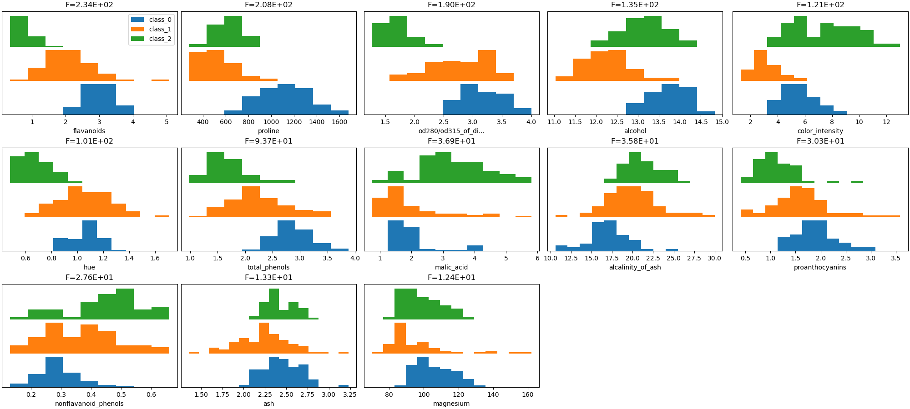
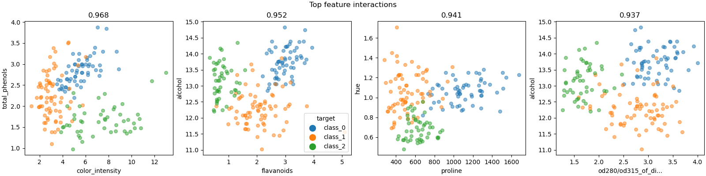
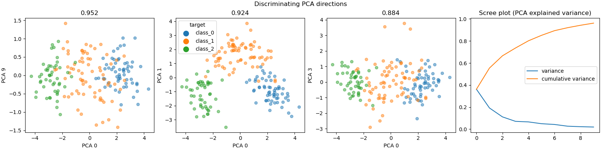

Note
Click here to download the full example code
Wine Classification Dataset Visualization¶
- 
- 
- 
Out:
/home/circleci/project/dabl/plot/supervised.py:499: FutureWarning: The second positional argument of plot is a Series 'y'. If passing a column name, use a keyword.
FutureWarning)
Target looks like classification
Linear Discriminant Analysis training set score: 1.000
Total running time of the script: ( 0 minutes 2.898 seconds)